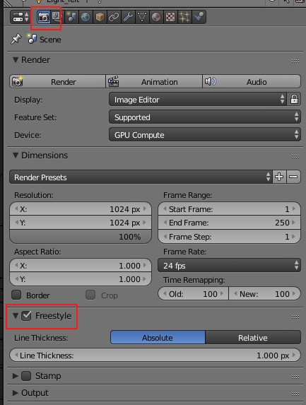
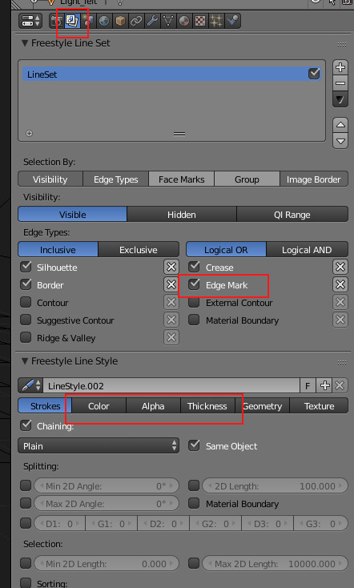
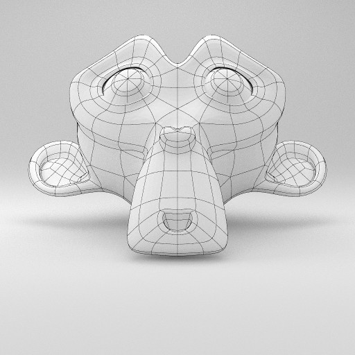
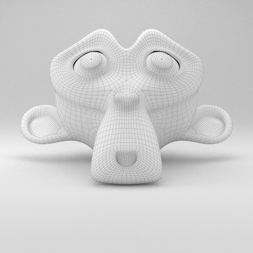
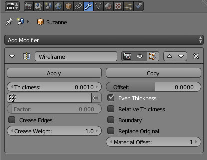
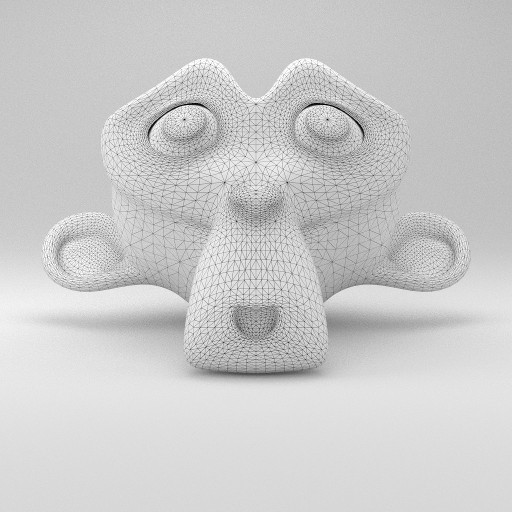
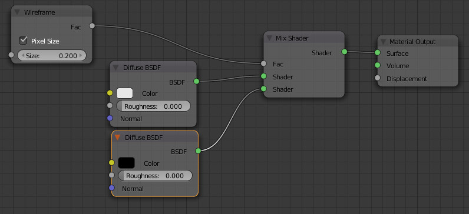
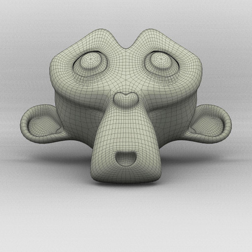

Renderização de wireframes
Blender Internal & Cycles
BI ou Cycles + Freestyle
Atualmente, a técnica mais recomendada envolve a utilização do Freestyle de forma integrada com o Blender Internal ou Cycles.
1- Escolha o renderizador que vai utilizar (Blender Internal ou Cycles) e prepare a sua cena (materiais, luzes) de acordo com o motor de renderização selecionado.
2- Ative o Freestyle.
3- Em Edit Mode, selecione todas as faces do modelo e clique em Ctrl+E. Depois selecione Mark Freestyle Edge.
4- Ative o Edge Mark no Freestyle Line Set.
5- Configure as linhas no Freestyle Line Style (Color para definir a cor, Alpha para a opacidade e Thickness para a grossura das linhas são as principais opções.)
  Modifier Wireframe
O Modifier Wireframe pode ser utilizado para gerar uma wireframe a partir de um modelo. A wireframe pode substituir o modelo original ou ser adicionada. Se adicionarmos a wireframe ao modelo e aplicarmos materiais diferentes, obtemos o efeito desejado. Na imagem abaixo, foi utilizado o motor Cycles e aplicados um material claro no objeto original e um escuro ao modificador Wireframe.
 Cycles
Wireframe Node
O Wireframe Node transforma todas as faces em triângulos e permite misturar dois materiais diferentes. É possível manipular o grau de grossura das linhas no próprio nó.
 Blender Internal
Material Wireframe
O Blender Internal tem um material de tipo Wireframe que pode ser utilizado para criar o efeito desejado.
